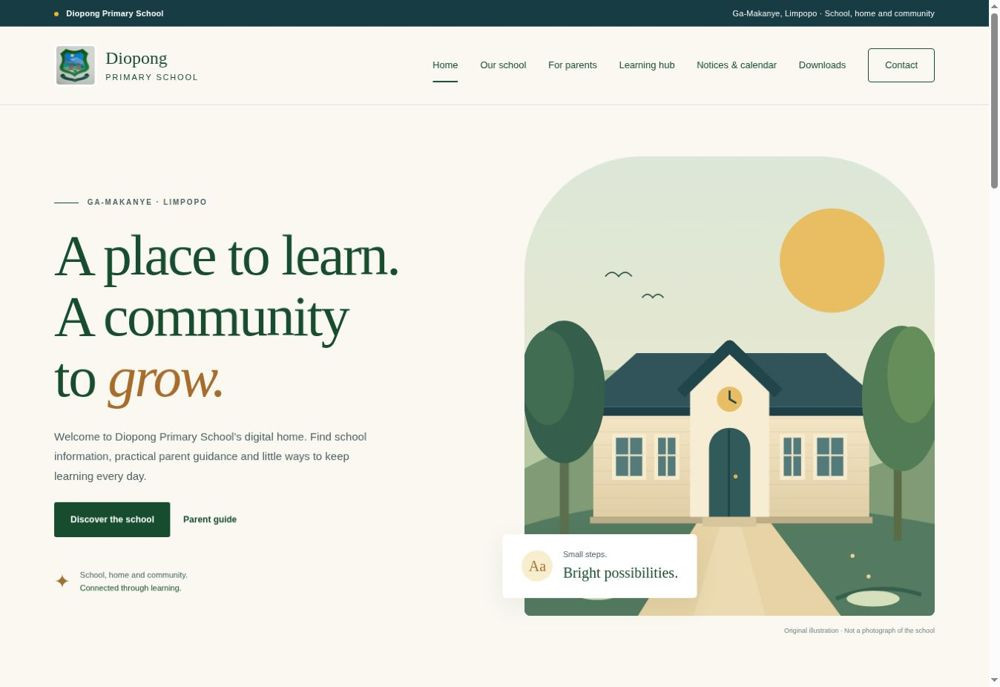
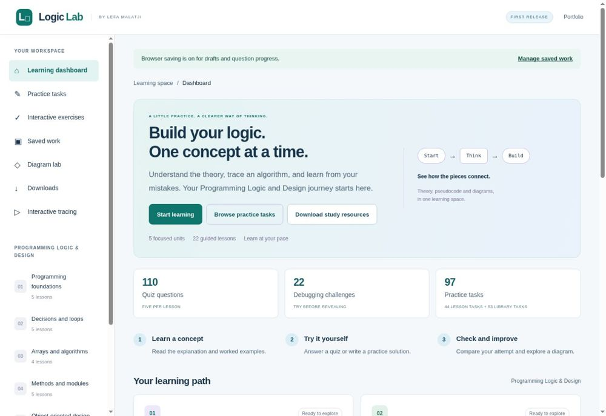

Business website development
A professional place to explain your services, show your work and help customers contact you.
- Service and company pages
- Mobile-friendly layouts
- WhatsApp, email and enquiry links
INDEPENDENT WEB & APPLICATION DEVELOPER
A clear, useful website for your business. A tailored application for the way you work. Built with care, from the first conversation to launch.
Work directly with Lefa Malatji.
Software developer, NLP researcher and lecturer.

Websites. Applications. Practical solutions.
01 / WHAT I CAN BUILD
Start with what your visitors need to find, understand or do. We can agree on a focused first version and build from there.
A professional place to explain your services, show your work and help customers contact you.
Useful information for families, with learning resources shaped around the school’s requirements.
Discuss a tailored system when your workflow needs more than an information website.
Keep your website useful after launch, with a clearly agreed support scope.
WHAT YOU RECEIVE
Your quotation sets the exact scope. These are the practical checks and handover details we discuss for each project.
Agreed pages and content, clear navigation, responsive layouts and appropriate email or WhatsApp links.
Review of the agreed links, forms and downloads, phone and desktop layouts, page titles and supplied content.
An overview of the website, agreed source or account access, content-update instructions and clearly assigned domain and hosting responsibilities.
Development: the pages, features, revisions and launch work in your written quotation.
External costs: domains, hosting, paid tools and third-party services are identified separately, including who pays renewals.
Content changes, document updates, layout fixes and feature requests can be quoted once-off or covered by an agreed maintenance arrangement.
We agree what is included, update frequency and response times. Extra features and urgent work need a separate agreement.
SERVICE PACKAGES
These are suggested starting scopes. Your written quotation confirms the deliverables, revision rounds, timeline and payment terms before work begins.
FOR SMALL BUSINESSES & PROFESSIONALS
Tailored quotation
A focused website to explain your services and make it easy for customers to reach you.
Online payments, booking systems, custom databases and ongoing updates are quoted separately.
Discuss a business websiteFOR SCHOOLS & THEIR COMMUNITIES
Tailored quotation
A useful public website for families, with school-approved information at its centre.
Learning hubs, quizzes, certificates, staff dashboards and admission systems are optional features, scoped separately. The school supplies and approves its content.
Discuss a school websiteFOR WEBSITES ALREADY ONLINE
Once-off or ongoing quotation
Keep your content current and arrange practical improvements after launch.
Compatibility and access are reviewed first. Major redesigns, new systems, hosting fees and emergency or round-the-clock support are outside this starting scope.
Discuss website careDatabase-backed systems, APIs, login roles and administration workflows need a requirements discussion and a project-specific quotation.
Discuss an applicationDomain registration, hosting, paid tools and third-party services are identified separately. Content preparation, ownership, access and ongoing responsibilities are agreed in writing.
02 / WORK YOU CAN EXPLORE
See a live school website and explore the engineering behind my software projects.

LIVE / ACTIVE DEVELOPMENT
English and Sepedi activities, interactive quizzes, achievement certificates for eligible Grades 4-7 results, and PDF or Word worksheets.
School-approved content continues to be added. Sepedi learning materials await teacher review.

LIVE LEARNING APPLICATION
A Programming Logic and Design learning space with quizzes, debugging challenges, pseudocode tracing, diagram generation and downloadable study material.
Developed as supplementary learning material. Features and content continue to be reviewed and extended.
03 / HOW WE WORK TOGETHER
Scope, timing, costs and responsibilities are discussed before development begins.
Tell me who the website is for, what it should do and what you already have.
We define the pages, features, content, estimated timeline and written quotation.
You review a working version. We check the agreed functionality and refine the content.
We connect the agreed hosting and domain, launch the website and discuss future updates.
YOUR DEVELOPER
I combine software development, database work and teaching to make technical ideas easier to use. My experience includes a software development internship, lecturing at Rosebank College and ongoing MSc research in Computer Science at the University of Limpopo.
More about my experienceBASED IN
Johannesburg,LET’S TALK IN
English or Sepedi04 / LET’S START A CONVERSATION
Share a little about your idea. I’ll use your requirements to discuss a suitable scope and prepare a tailored quotation.
Pricing depends on the pages, features, content and support you need. Domain, hosting and third-party service costs will be discussed separately where applicable.
A FEW USEFUL ANSWERS
Yes. I’m based in Johannesburg and offer website development for small businesses, schools and organisations. Share your goals, the pages you need and any existing content so we can discuss a suitable first version.
Yes. I develop web applications with database-backed workflows and ASP.NET Core APIs. Features, hosting, security requirements and ongoing support are scoped for each project.
The quotation depends on the number of pages, custom features, content and maintenance required. Use the project enquiry form to describe your needs. Domain, hosting and third-party costs are discussed separately.
A domain in your or your organisation’s name is a good long-term choice. We can discuss registration, hosting and who will manage each account.
Yes, we can first review the existing website, technology and access available, then agree which changes are practical.
Responsive layouts are part of the development process. The agreed pages and features will be checked at different screen sizes before launch.
Yes. We can prioritise a useful first version, then plan later features and maintenance separately.